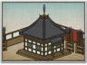

Requires
- Buildings: 
- Arts:

Enables


Basic Building Statistics (can be modified by difficulty level, arts, skills, traits and retainers)
- Cost: 2000
Description
Fear stabs at the enemy before the spear.
This dojo allows the recruitment of naginata-armed samurai units; if there is a large enough temple in the province, naginata-armed monks can also be trained. The naginata itself is a fearsome weapon, and requires considerable training to use effectively in battle. It is also a weapon favoured by samurai women for "home defence" when their men are on campaign. It should not, however, be considered in any way effeminate because of that! To the untrained eye, the naginata looks like a spear with a wickedly sharp sword instead of a point. It can be used as a spear, of course, to thrust into an enemy or braced to receive a charge, but it is at its most effective when an adept uses it to cut and parry. Anyone facing a naginata has to deal with something that can cut and slash at a greater range than any sword, and be used to block any counterattack: the shaft is as much a part of the weapon's strength as the blade itself! Traditionally, it was considered an extremely useful weapon against mounted enemies.